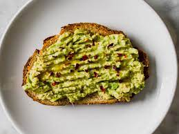

Ingredients
- Half small avocado
- Half teaspoon fresh lemon juice
- Pinch of kosher salt
- Freshly ground black pepper to taste
- Slice whole grain bread, toasted
- Half a teaspoon extra-virgin olive oil
Instructions
- In a small bowl, combine avocado, lemon juice, salt, and pepper. Gently mash with the back of a fork.
- Top toasted bread with mashed avocado mixture. Drizzle with olive oil and sprinkle over desired toppings.